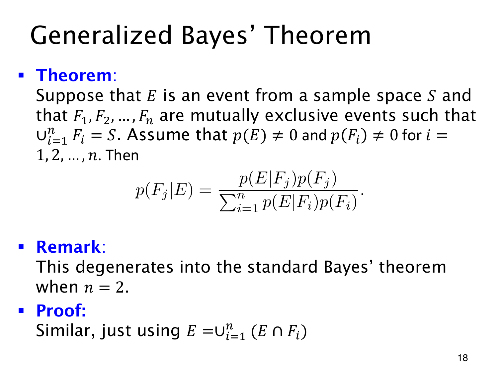

L1.10 · 第 18 页讲解原文
查看这一页课件

多个来源的 Bayes 公式
来源不止两类时，用 F1,…,Fn 表示，并要求它们构成样本空间的划分：两两互斥，合起来覆盖 S，每次结果恰好属于一类。
当各 p(Fi)>0、p(E)>0 时，观察到证据 E 后，来源 Fj 的概率是
p(Fj∣E)=∑i=1np(E∣Fi)p(Fi)p(E∣Fj)p(Fj).
分子只取 Fj 的贡献，分母则包含所有来源。不能只留下“看起来比较可能”的几类，否则就低估了总证据概率 p(E)。
证明仍从全概率开始。各 E∩Fi 互斥且组成 E，所以
p(E)=i∑p(E∩Fi)=i∑p(E∣Fi)p(Fi).
将它代入 p(Fj∣E)=p(E∩Fj)/p(E) 即得公式。n=2 时，两来源互为补集，便还原为二分类公式；多个盒子或多台生产机器都可按同样方式分源。
各来源后验应满足 ∑jp(Fj∣E)=1，可以据此核对归一化是否正确。